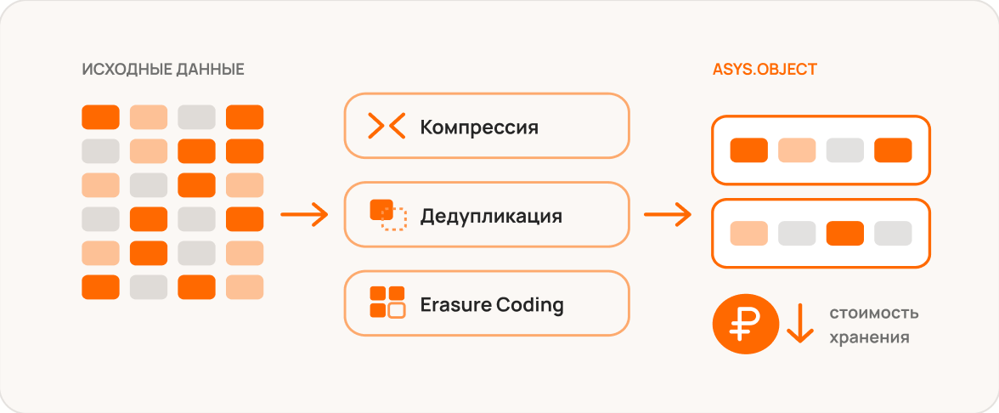

Объектное хранилище простыми словами
Объектное хранилище хранит данные не в папках и не в блоках диска, а в виде объектов. Каждый объект — это сам файл, его метаданные и уникальный идентификатор. Все объекты лежат в плоском пространстве бакетов, поэтому система не упирается в глубину дерева каталогов и спокойно работает с миллиардами записей.
Доступ к данным идёт через HTTP API — чаще всего совместимый с Amazon S3. Это значит, что большинство современных приложений, систем резервного копирования и аналитических движков умеют работать с таким хранилищем «из коробки».
Объектное хранилище масштабируется горизонтально: ёмкость и производительность растут добавлением новых узлов — без остановки сервиса и миграции данных.
Чем оно отличается от файлового
Файловые системы удобны для совместной работы с документами, блочные — для баз данных и виртуальных машин. Объектное хранение решает другую задачу: дешёво и надёжно хранить большие объёмы неструктурированных данных.
- Плоская структура — нет ограничений на глубину каталогов и число файлов
- Богатые метаданные — объекты легко искать, классифицировать и защищать политиками
- Erasure Coding вместо полной репликации — экономия дискового пространства

Где применяется
Чаще всего объектное хранилище выбирают для резервного копирования и архивов, озёр данных под аналитику и BI, хранения медиаконтента, а также для датасетов и артефактов моделей машинного обучения. Во всех этих сценариях важны объём, надёжность и предсказуемая стоимость терабайта.
Как начать с ASYS.Object
ASYS.Object разворачивается on-premise на стандартных x86-серверах и полностью совместим с S3 API. Начать можно с небольшого кластера из трёх-четырёх узлов и наращивать его по мере роста данных — без замены оборудования и простоев.